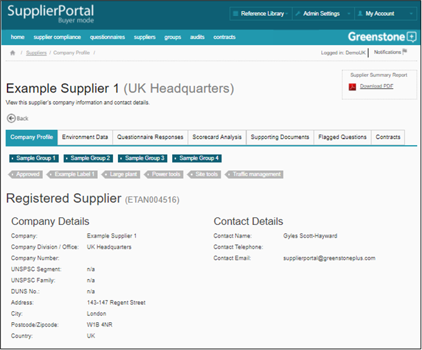
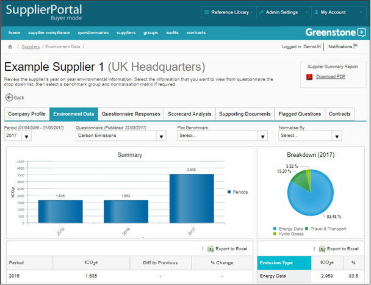
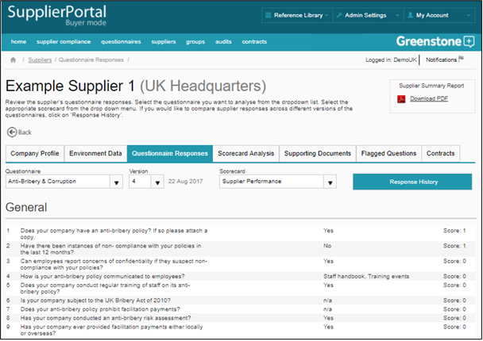
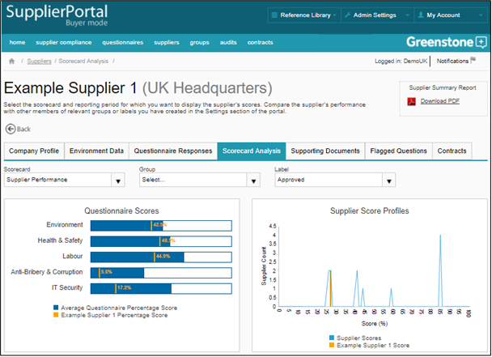
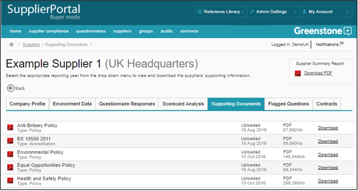
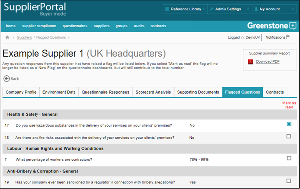
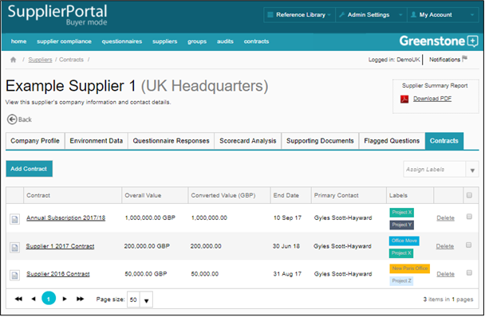
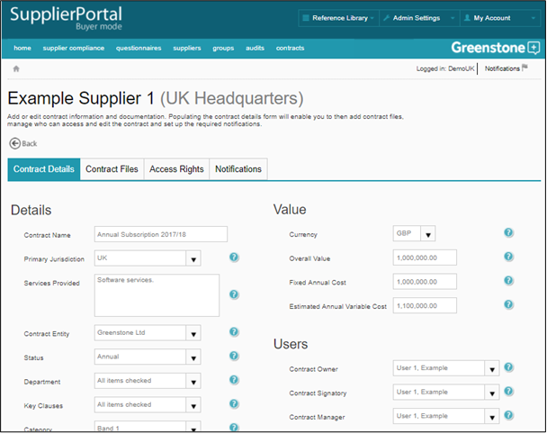

When you click on a Supplier’s name in the search results, their organisation’s information and data will be displayed in the supplier profile. Here you will be able to navigate through the Supplier’s Company Details, Environment data, Questionnaire Responses, Scorecard Analysis, Supporting Documents, Flagged Answers and Contracts. Click on the PDF icon to download a summary report for the Supplier.
In Company Profile you can enter information about Supplier and Buyer relationship managers, which is then searchable using the advanced search function.

In the Environment Data section, you can review the supplier’s year on year environmental information, if they have been required to share this information with you. The Supplier’s data can be normalised according to the number of employees and financial turnover and benchmarked using the groups that you have created (Admin settings menu). All data displayed in the Environment section of the portal can be exported to Excel by clicking on the ‘Export figures’ icon at the top right of the main screen.

In the Questionnaires Responses section, you can view the Supplier’s responses to all questionnaires that they have published. Use the drop down menus to view different questionnaires, select the reporting period, determine the version and select the scorecard you wish to apply to the Supplier’s responses. Scorecards can be created and managed in the Settings section of the portal, please see Admin Settings. To view a comparison of different questionnaire versions, click on ‘Response History’.

In the Scorecard Analysis section, select the scorecard for which you want to display the Supplier’s scores, as well as the group or label that you wish to filter against. Then compare the Supplier’s performance with other members of relevant groups or labels you have created in the Settings section of the portal. View the Supplier’s Scorecard performance for each question in the table below the charts.

In the Supporting Documents section, view and download any supporting documentation that the Supplier has uploaded to support its data and questionnaire responses.

In the Flagged Questions section you can view any questions and responses that have been flagged. If you mark the flag as read then it will no longer be classified as a new tab, however this flag will still contribute to the total number of flags. The only way for a flag to be completely removed is if the Supplier amends their response to the question, or if you remove the flag in Admin settings.

In the Contracts section you can create multiple contract records for the supplier. Within each record you can capture details of the contract e.g. cost, users, key clauses etc, and upload multiple contract files, assign user access and manage contract notifications. Click on ‘Add Contract’ to create a new contract record – the fields under the ‘Details’ section of this page are customisable for Buyers; please get in contact with Cority Support to discuss the configuration process.
In order for contract notifications to function properly each user will need to ensure that they have contract notifications switched on in the notifications area of the tool (see Notifications).


You can also download a PDF summary report of the Supplier’s data and questionnaire responses.